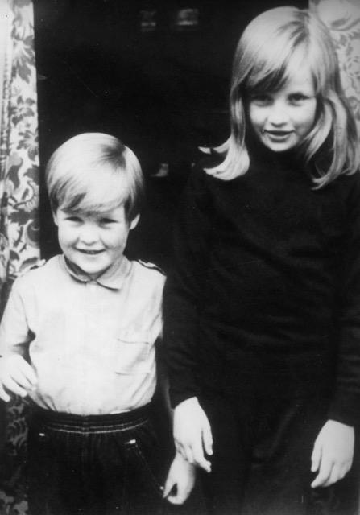
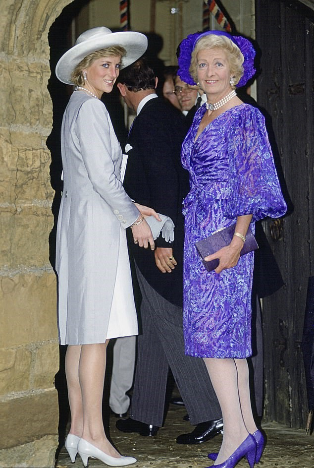

Master Storyteller
By Lucia Adams
“I think the time has come for me to put a line under being the man who made the speech at his sister’s funeral.”
Delivering the eulogy
The Brother
Charles, the Ninth Earl Spencer, is custodian of Althorp in Northamptonshire a Grade I stately home bursting with van Dycks, Lelys, Reynolds and a nonpareil library. Set in a 13,000 acre estate it is one of Britain’s great, privately-owned, historic houses of which the earl is exceedingly proud, “The house has been ours since 1508, and the collection reflects the varying tastes of 17 previous generations of Spencers”.
More British than The Germans, as a spikey Diana called the WIndsors, the Spencers, one of 191 extant earldoms, are relative aristocratic parvenus unable to trace a heritage before William the Conqueror like the Berkeleys or the Earl of Arundel to 1138. They are outranked by 30 dukes and 34 marquesses by wealth, influence, authority — and acreage as in 133,000 acres of the Duke of Westminster or the Duke of Alnick’s 120,000 acres. The rich sheep farmers from Warwickshire received a title in the 16th century with Robert Spencer, the first baron.

Charles Spencer wrote himself large into the history books with his eulogy at the funeral service of Diana, former Princess of Wales, she who “needed no royal title”, in Westminster Abbey on September 6, 1997. Incandescent with fury he declared that “we, your blood family” would care for her sons the way she would have wanted and “not simply immersed by duty and tradition”.
Thus “deeply impertinent” Champagne Charlie took on two of the most powerful institutions in the land — the press and the BRF (British Royal Family). The tabloids got their revenge, painting him as a callous, philandering toff who dumped his first wife in the throes of a terrible disease and accusing him of exploiting the memory of the “people’s princess” to promote his own interests as in the elaborate DIana-themed exhibitions in Althorp. As for the BRF he was notably absent from Archie’s christening portrait and some wags say may never be included in any future Windsor family portraits.

Charles and Diana
The press has gleefully reminded us that Charles Spencer refused his sister’s plea for much needed refuge at Garden House on the Althorp estate in 1994 quoting a friend that “He behaved pretty horribly to her actually, since they hadn’t been close since they were kids.” Spencer admitted that yes, there had been a falling out in 1994, when he feared excessive media intrusion at Althorp though he was living in South Africa, but they made up soon after.
He has recently revealed he has undergone twenty years of “horrible and agonizing” therapy including “a lot of very profound work on my unhappy childhood” with the help of his third wife Karen Gordon. A charity entrepreneur and former wife of a Hollywood mogul still retaining a home in Pacific Palisades, she is proud her current husband has “a predisposition for rescuing people” and that he is “so willing to work on himself “ and their “supportive partnership”. Familiar patois?

Charles and Karen Spencer
As part of burnishing his public image Spencer recalls that his father Johnnie, the Eighth Earl and godson of the Duke of Windsor, was a “quiet and constant source of love” but his mother Frances, “the bolter”, daughter of a lady in waiting to the Queen Mum “wasn’t cut out for maternity”; borrowing Diana’s script he declares she deeply wounded her two youngest children by abandoning them.
Last week their nanny Mary Clarke disputing the claim his childhood was ruptured and “agonizing” said this was utter nonsense. They had a beautiful childhood and their mother was loving and engaged in their lives after the divorce though she had lost custody of them in a court case — about which the children knew absolutely nothing. Their parents gave them “a wonderful life.”

Diana and her mother.
Since the WIndsors have not disappeared into obscurity as he implied they would (”Well, I’m sure if there’s still a monarchy at the time when William would be eligible for succession, then he will be king.” ) Spencer has apologized for “the underlying power to the words”. They were apparently the result of “physically having to force the words out from the bottom of my stomach up” and anger that the young princes had to walk behind the coffin. No, “it wasn’t a general criticism of the royal family.” Ahem.

The anniversary of Diana’s death continues to “take him out at knees” and on one of his numerous Twitter posts we see the Spencer flag flying half-mast at Althorp. During the pandemic he is isolating there with the countess and the youngest of his seven children while his personal chef and a team of kitchen volunteers send out thousands of free meals to local NHS frontline workers. He had also raised £12,000 for the British Red Cross. Althorp’s annual Literary Festival featuring writers like Julian Fellowes will be conducted online this October and the Food and Drinks Festival will hopefully take place in 2021.

The Custodian
Following criticism in 2014 by Diana’s own chef that her final island resting place had become untidy and neglected it has undergone extensive remodelling, along with the rest of Althorp’s gardens, the first transformation since Le Notre. In the absence of government subsidies since Brexit special events have helped with financial support and Althorp house is available to rent for a week with a five course dinner priced at £300 a head, (with breakfast £500) and £10,000 to have it served in the picture gallery. The full house is available for £75,000 a week.

‘
The Historian
Educated at Eton, Charles Spencer read Modern History at Magdalen, Oxford then for a decade was a reporter for NBC News. He has written four books of English history along with several tomes on Althorp and Diana. His latest, like the others residing comfortably within the rarefied confines of the tippy top of the English aristocracy (no Labour history or Industrial Revolution here thank you!), The White Ship commemorates the 900th (yes the 900th!) anniversary of the shipwreck on November 25, 1120 that changed English and European history forever.
King Henry I, the fourth son of WIlliam the Conqueror, was sailing to England after four years of fighting the French. On a separate ship was his only legitimate heir to the throne and the Dukedom of Normandy, 17 year old WIlliam Aetheling and his 300 strong retinue, the flower of the aristocracy. In the middle of the night a drunken helmsman rammed the ship into the notorious rock the Quilleboeuf and all save a butcher perished.
The loss of the White Ship was a tragedy for the Anglo-Norman ruling class. With the heir to the throne dead, a twenty year civil war of savage violence erupted, known as The Anarchy, when English and Norman barons, rebellious Welsh princes and the Scottish king all betrayed each other. It was the bloodiest dynastic conflict that England has ever suffered, ending in 1153 with the succession of Henry II the first Plantagenet.
Spencer covers a hundred years of history, from the Norman Conquest to Henry II, in 300 pages largely based on the medieval history of the monk William of Malmesbury. It is a well written fast paced popular history praised for the narrative flow and vivid portraits of the main players. Some have however raised questions about about the lack of analysis of the sources and a professional historian identified twenty two minor factual errors.

Other history books by Spencer include Blenheim: Battle for Europe ,the first British military triumph on European soil since Agincourt, shortlisted for History Book of the Year National Book Awards. Prince Rupert – The Last Cavalier, is an action packed, true adventure story of a Renaissance prince. Killers of the King follows the careers of the regicides of Charles I through the Commonwealth and Protectorate to the Restoration, the second best-selling history book in the U.K. in 2014. Using Pepy’s first hand account To Catch A King Charles II’s Great Escape describes with verve the relentless pursuit of the young king in disguise who with grit, fortitude and good luck prevailed retaining his title-and neck. Historians and academics have as usual questioned Spencer’s unquestioning acceptance of contemporary primary sources with their inevitable royal and aristocratic predispositions.